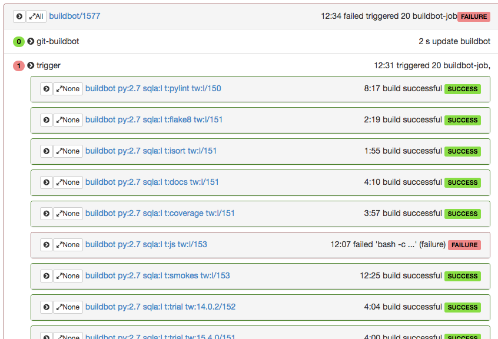

Buildbot
a Continuous Integration Framework
Build and scale your own Continuous Integration System
Presentation by Pierre Tardy
About Me
About Me
About Me
About Me
Embedded firmare engineer
Linux Kernel engineer
Android Integration
What kind of hacker are you?
| Algorithmicist | |
| Tinkerer | |
| 50% | Architect |
| Sharpshooters | |
| 50% | Jack-of-all-trades |
| Prankster | |
| Castellan | |
| Translator |
Questions
Agile
 source
source
Continuous Integration
 source
source
2009
Open Source
Buildbot, Hudson
Proprietary
CruiseControl
Bamboo
TeamCity
2017
AppVeyor Bamboo Buildbot CruiseControl GitLabCI GoCD Jenkins Hudson Shipable Travis CI TeamCity Vexor[...]
Your Own?
Build it based on Buildbot!
Buildbot Overview


The Master.cfg
Usage Data
let's compile!

Buildsteps
http://docs.buildbot.net/latest/manual/cfg-buildsteps.html#common-parametersResults
Triggers and Triggerable
(simplified) Data Model
Results
The code!
mydashboardapp = Flask('test', root_path=os.path.dirname(__file__))
@mydashboardapp.route("/index.html")
def main():
# This code fetches build data from the data api, and give it to the
# template
builders = mydashboardapp.buildbot_api.dataGet("/builders")
builds = mydashboardapp.buildbot_api.dataGet("/builds", limit=20)
# properties are actually not used in the template example, but this is
# how you get more properties
for build in builds:
build['properties'] = mydashboardapp.buildbot_api.dataGet(
("builds", build['buildid'], "properties"))
build['results_text'] = statusToString(build['results'])
# mydashboard.html is a template inside the template directory
return render_template('mydashboard.html', builders=builders, builds=builds,
graph_data=graph_data)